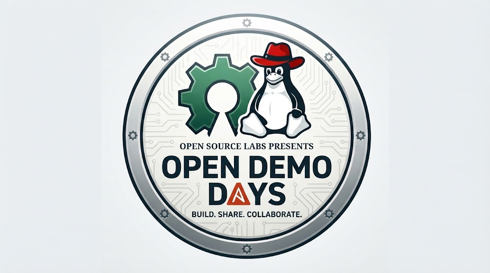
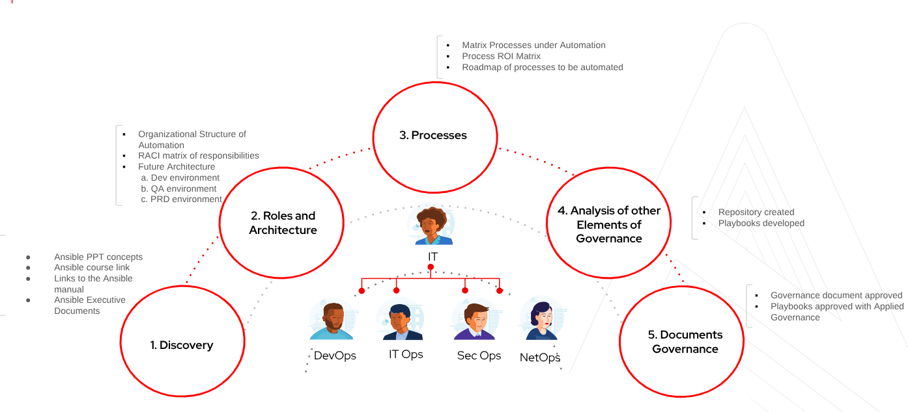
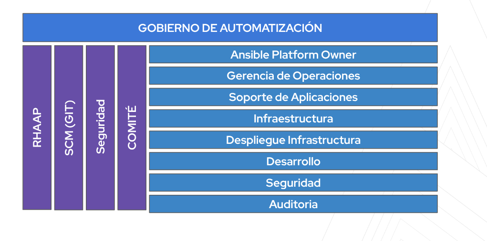
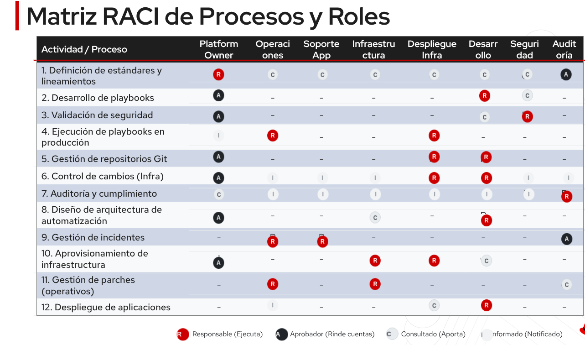

OPEN DEMO DAYS · 01
Gobierno de automatización
Workshop de Ansible / AAP
Open Demo days. Open Industries.
Resultado: un caso por dominio con responsables, gates y evidencia hasta la aceptación del output.

OPEN DEMO DAYS · 02
Resultados del workshop
Un expediente por equipo
Caso de uso y contrato de ejecución.
RACI, playbook local, pruebas, contrato AAP, output aceptado y roadmap de 90 días.
OPEN DEMO DAYS · 03
1. Fundamentos y contexto
Gobierno de extremo a extremo
Cada automatización necesita un dueño y una decisión de aceptación.
El alcance incluye diseño, ejecución, entrega, operación y retiro.
OPEN DEMO DAYS · 04
Riesgos y evidencia
Control proporcional al impacto
Privilegios mínimos reducen el alcance de un error.
Versionado y revisión hacen el cambio auditable. La verificación funcional detecta resultados incompletos.
OPEN DEMO DAYS · 05
Modelo federado
Dominios con controles comunes
El dominio posee el caso y su aceptación.
Seguridad, SCM y AAP mantienen controles transversales. Operaciones entrega y monitorea el resultado.

OPEN DEMO DAYS · 06
2. Modelo de gobierno
Principios operativos
Owners explícitos, seguridad desde diseño y releases trazables.
Entradas y destinos limitados. Recuperación documentada antes de ejecutar.
OPEN DEMO DAYS · 07
Políticas de automatización
Un contrato por caso
Naming, tags, variables y outputs forman parte de la especificación.
Secrets externos. Extra vars sólo para inputs aprobados. El playbook vuelve a validar esos inputs.
OPEN DEMO DAYS · 08
Riesgo y approval gates
Código y ejecución tienen autorizaciones distintas
Seguridad revisa todo caso nuevo.
Producción crítica necesita aprobador independiente, ventana y recuperación probada.
OPEN DEMO DAYS · 09
3. Roles y responsabilidades
Ocho roles explícitos
Dueño, Dev, Seguridad, SCM, AAP Admin y dominio técnico.
Operaciones ejecuta y entrega. El solicitante valida la utilidad del resultado.

OPEN DEMO DAYS · 10
RACI por etapa
Exactamente un A y al menos un R
El responsable final decide. El responsable de ejecución entrega evidencia.
La matriz distingue ejecución, entrega y aceptación. Cada owner registra suplente.

OPEN DEMO DAYS · 11
4. Git y repositorios
Monorepo para el piloto
Playbooks por dominio y rol compartido de laboratorio.
Separar repos cuando cambian permisos o cadencia. CODEOWNERS no limita lectura por path.
OPEN DEMO DAYS · 12
Branching y releases
Ramas cortas y main protegida
Feature por ticket, PR y release identificado por commit.
Develop es opcional para integración. Producción usa una revisión conocida y EE aprobado.
OPEN DEMO DAYS · 13
Checks y revisiones
Evidencia del candidato
Syntax, lint, Molecule y scan de secrets.
CODEOWNERS requiere configuración de ramas. Varios owners en un path no garantizan varias aprobaciones.
OPEN DEMO DAYS · 14
5. Ciclo de vida
Del caso al resultado aceptado
Definición, diseño, desarrollo, validación y release.
AAP, pruebas, solicitud, ejecución y entrega. El consumidor acepta antes de cerrar.
OPEN DEMO DAYS · 15
Configuración de AAP
Objetos y accesos del laboratorio
Project de sólo lectura, inventory local y EE aprobado.
JT por dominio, survey limitado y workflow con gate. Registrar revisión efectiva y job ID.
OPEN DEMO DAYS · 16
Contrato de output
Resultado saneado y verificable
Request ID, dominio, estado y evidencia vinculan la solicitud.
Set_stats publica artifacts. Un archivo en EE es efímero y necesita persistencia externa para producción.
OPEN DEMO DAYS · 17
6. Validaciones y controles
Pruebas sobre comportamiento
Segunda ejecución sin cambios. Entradas inválidas fallan antes de escribir.
La simulación local no valida APIs reales. El piloto exige integración y recuperación en destino.
OPEN DEMO DAYS · 18
Secrets y privilegios
Custodia y rotación
AAP Credentials, secret manager o Ansible Vault según necesidad.
No_log y diff requieren revisión. Nunca incluir secrets en logs, artifacts ni notificaciones.
OPEN DEMO DAYS · 19
7. Ejercicio dinámico
Siete dominios y un equipo transversal
Virtualización, Network, Cloud y Plataformas.
Seguridad, Infraestructura y Storage completan sus casos con el mismo modelo de evidencia.
OPEN DEMO DAYS · 20
Plan del ejercicio
180 minutos en el recorrido compacto
Selección 20, diseño y RACI 30, desarrollo 45.
Pruebas 30, AAP o recorrido 25, demo y revisión 30 minutos.
OPEN DEMO DAYS · 21
Demostración por equipo
Cinco minutos con evidencia
Explicar el caso, ejecutar, repetir y mostrar output.
Defender RACI, gates y recuperación ante una tarjeta de incidente.
OPEN DEMO DAYS · 22
8. Cierre y roadmap
Adopción en 90 días
Aprobar modelo, preparar plataforma y ejecutar dos pilotos.
Medir resultados, extender a dominios e institucionalizar owners y calendario de revisión.
OPEN DEMO DAYS · 23
KPIs de gobierno
Línea base antes de metas
Cobertura de owners, éxito funcional y lead time.
Cambio fallido, evidencia completa, ahorro neto y excepciones vencidas.
OPEN DEMO DAYS · 24
Acuerdos de cierre
Owners y siguiente revisión
Cada equipo entrega expediente y brechas con fecha.
El sponsor y el foro aceptan el modelo. El piloto en controller precede a producción.